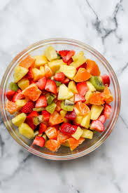
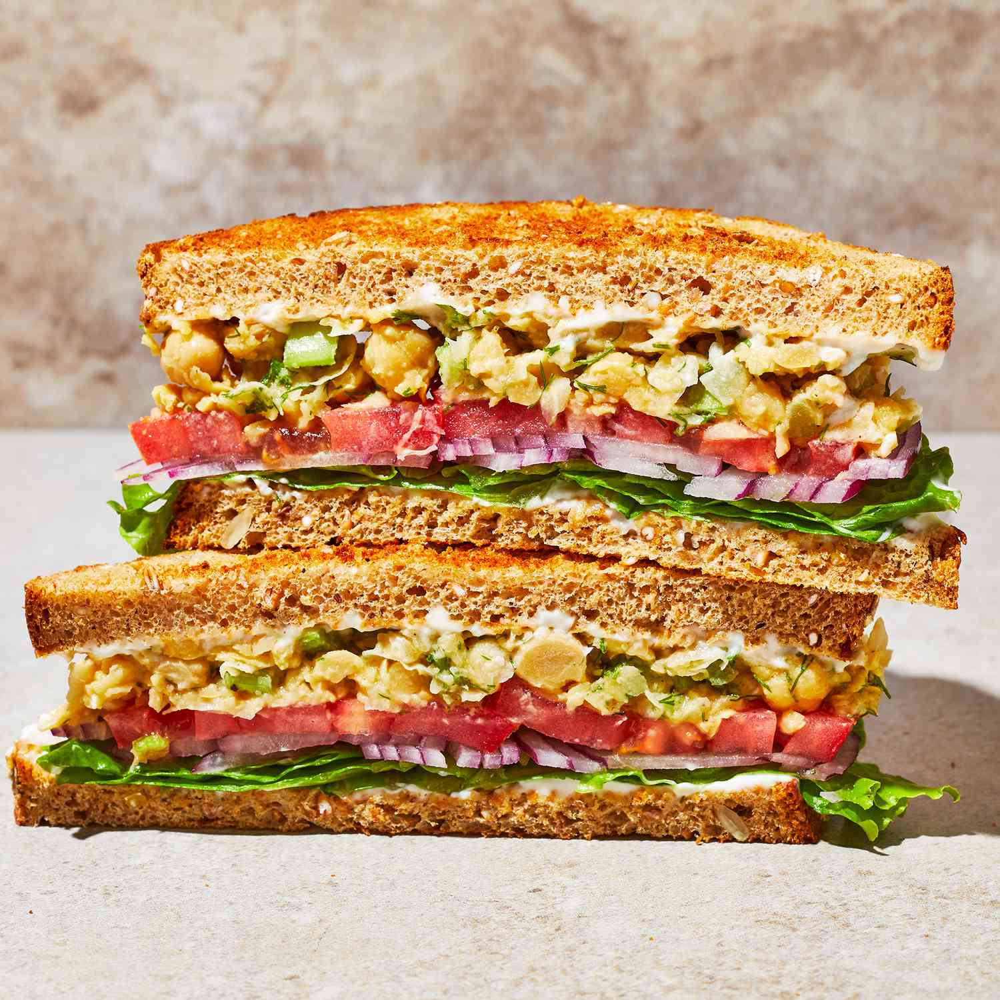
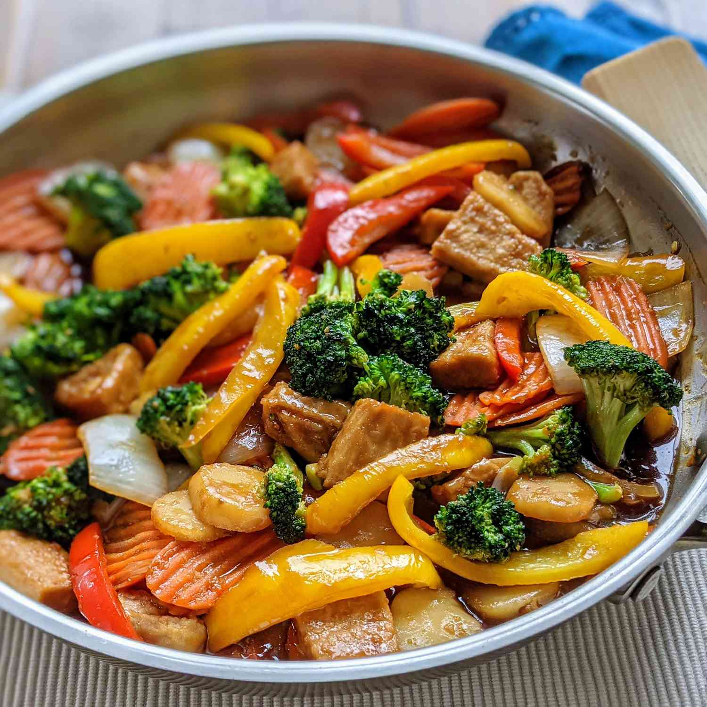

Day 1: Grilled Chicken Salad
Healthy salad with grilled chicken breast, mixed greens, tomatoes, cucumbers, and balsamic vinaigrette.
- Prep Time: 15 minutes
- Cook Time: 15 minutes
- Calories: 400 kcal

Day 2: Quinoa and Vegetable Bowl
Quinoa served with roasted vegetables (bell peppers, zucchini, carrots), chickpeas, and a lemon tahini dressing.
- Prep Time: 20 minutes
- Cook Time: 20 minutes
- Calories: 350 kcal

Day 3: Tuna Salad Sandwich
Whole wheat bread filled with tuna salad (canned tuna, celery, mayonnaise), lettuce, and tomato slices.
- Prep Time: 10 minutes
- Calories: 300 kcal

Day 4: Vegetable Stir Fry
Assorted vegetables (broccoli, bell peppers, snap peas) stir-fried with tofu in a savory soy ginger sauce.
- Prep Time: 15 minutes
- Cook Time: 10 minutes
- Calories: 250 kcal